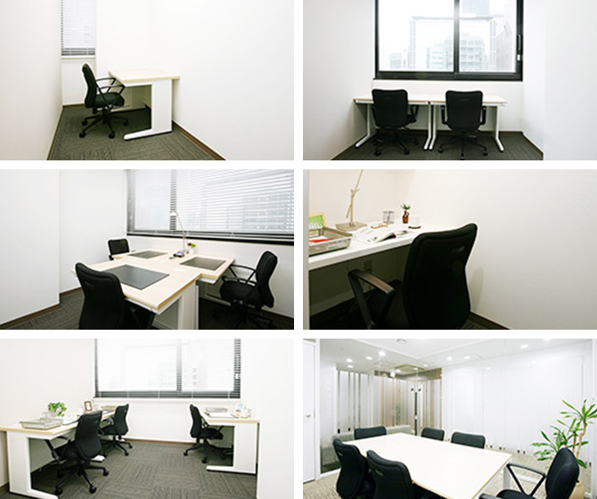

【個室レンタルオフィス】
オープンオフィス広島大手町
オープンオフィス広島大手町がNEW OPEN
オープンオフィス広島は鯉城通り（電車通り）に面し、広島電鉄「中電前駅」徒歩1分という、ビジネスにも通勤にもとても便利なロケーションです。
オープンオフィス広島大手町が提供するオフィスサービス
-
 高速インターネット＜光ファイバー＞
高速インターネット＜光ファイバー＞
- 100Mbpsの光ファイバーによるブロードバンド環境をご用意しました。各部屋に配線済みですので、パソコンに繋げばすぐLAN経由で高速インターネットを利用出来ます。
-
 ネットワーク・カラーレーザープリンタ+スキャナー
ネットワーク・カラーレーザープリンタ+スキャナー
- ネットワークを利用して、各お部屋のパソコンから印刷できます。プリンタをご用意いただく必要もございません。
スキャナー機能も搭載しております。
-
 カラーレーザーコピー
カラーレーザーコピー
- フロア内にご用意してあります。カード方式でコピーが出来ますので、小銭の準備が不要です。
-
 ICカードキーによる入室管理
ICカードキーによる入室管理
- 専用ICカードを使ったホテル式のスマートシステムを用いて、セキュリティーを向上させています。
-
 ミーティングルーム（会議室）
ミーティングルーム（会議室）
- 商談・会議にご利用いただける共有スペースをご用意しています。インターネットで簡単に予約をしていただけます。
-
 無線LAN（WiFi）
無線LAN（WiFi）
- 共有スペースとミーティングスペースにて、無線LAN(WiFi)サービスをご利用いただけます。

オープンオフィス広島大手町の特徴

ビジネス、採用にも有利に働く好ロケーションセンター
お客様への説明や誘導に便利な電車通り沿い
ビジネスホテル多数揃い、広島支店に最適な環境
県庁、市役所、官公庁へのアクセスにも便利
貴社のワークスタイルに柔軟に対応できる24時間利用可能体制
オフィス周辺のMap
オープンオフィス広島大手町近隣のスポット
- ■銀行
- 広島銀行 本店
三菱東京ＵＦＪ銀行 広島支店
みずほ信託銀行 広島支店
もみじ銀行 紙屋町支店
三井住友銀行 広島支店
商工中金 広島支店
福岡銀行 広島支店 - ■レストラン
- 鮨処 ひと志 寿司
懐石 わたなべ
ＯＺＡＷＡ フレンチ
Ｈｉｒｏｔｏ フレンチ
天冨良 天甲本店 天ぷら
八昌 お好み焼き - ■ホテル
- ＡＮＡクラウンプラザホテル広島
リーガロイヤルホテル広島
オリエンタルホテル広島
三井ガーデンホテル広島
ダイワロイネットホテル広島 - ■レジャー
- 東急スポーツオアシス 広島店
ライザップ 広島店 - ■映画館
- 八丁座 （映画館）
サロンシネマ１・２（映画館）
シネツイン （映画） - ■余暇施設
- 原爆ドーム
平和記念公園
広島城
オープンオフィス広島大手町の住所・アクセス
- 住所:
- 広島県広島市中区大手町3-1-3 IT大手町ビル 6階
- 空港からのアクセス:
- 広島空港から白神社前までバスで約65分
広島空港から広島バスセンターまでバスで約50分,そこからタクシーで5分 - 電車からのアクセス:
- 「広島駅」から広島電鉄で「中電前駅」まで約17分
「中電前駅」から徒歩1分 - お車でのアクセス:
- 鯉城通り（電車通り）、平和大通り 「白神社前」交差点至近
オープンオフィス広島大手町のフロアマップ
6F

※フロア内は禁煙です。
※こちらはイメージ図となりますので、状況が異なる場合は現況を優先させていただきます。
- ◆初回納入金
- 利用料1ヶ月分の保証金
- ◆共益費
- 水道光熱費、ビル共益費、ゴミ出し、フロア・トイレの清掃、共有部分の消耗品代を含みます。
リージャスグループの説明
リージャス・グループは、柔軟なワークスペースを提供する世界最大の企業です。そのネットワークは世界120カ国1,100都市、3300拠点に及びます。会員数は250万人で、業界で成功を収める大小様々な企業や起業家の方々にご利用いただいています。
リージャスは、個室タイプのレンタルオフィス、コワーキングスペースなど多彩なオフィスプラン、近年需要が高まるモバイルワークやバーチャルオフィス、障害復旧サービスの提供を通じ、お客様が予算やワークスタイルに合わせて仕事を行うことができる環境を提供いたします。